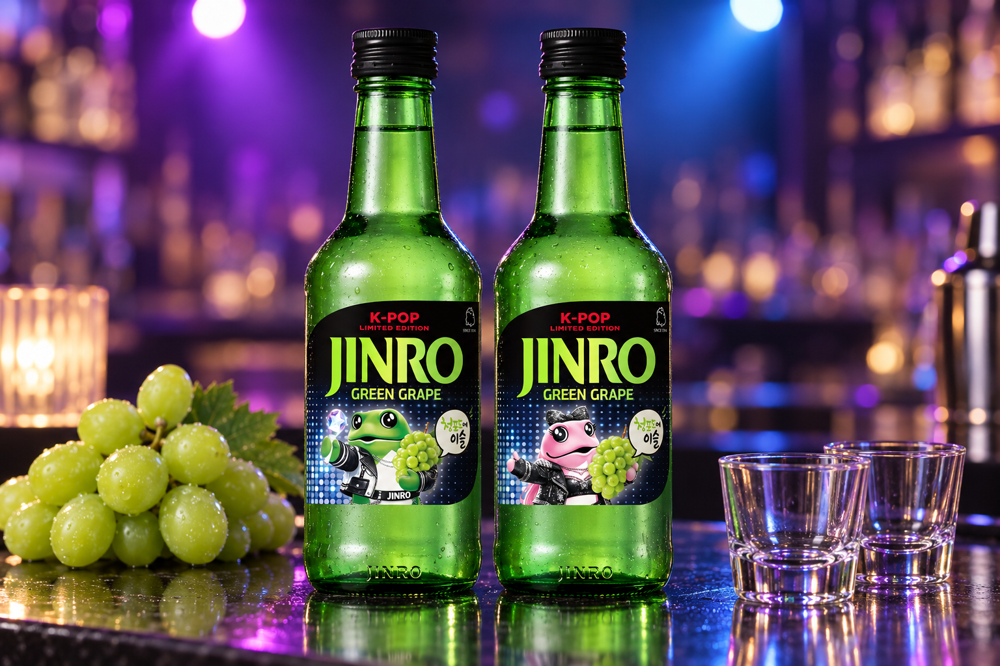
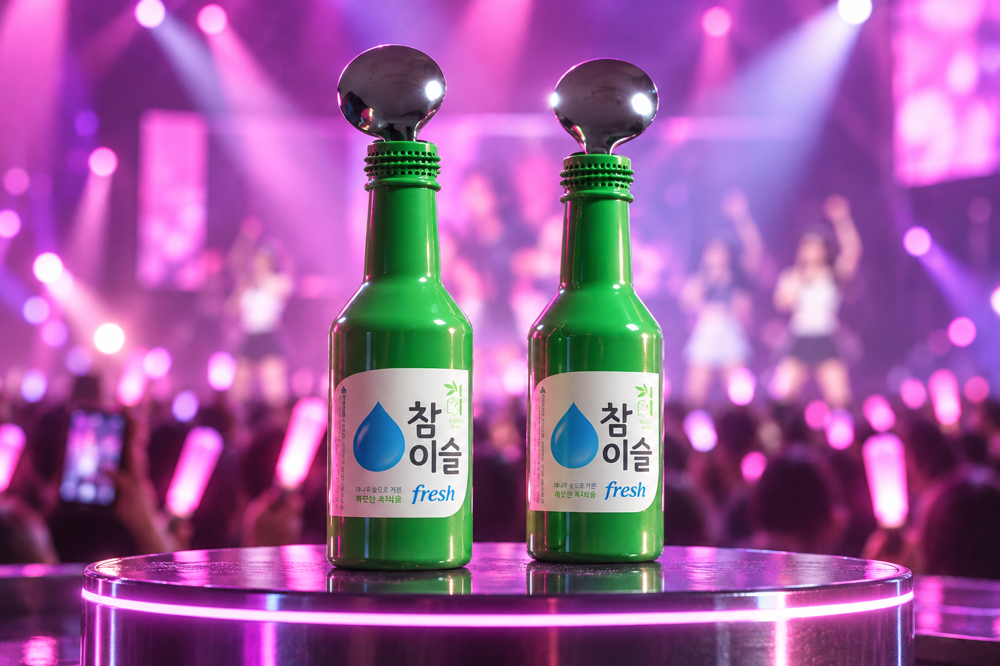

JINRO Toad 的 K-POP 出道裝備：燒酒瓶造型麥克風
Toad 的 K-POP Star 造型推出時，還有一系列限定周邊，其中包括一支 JINRO 酒瓶造型的麥克風。
還記得 JINRO Toad 的 K-POP 大出道嗎？今年夏天，Toad 以綠色和粉紅色兩種 K-POP Star 造型，登上了 JINRO Green Grape 限定版的標籤。

新造型也搭配了限定周邊，其中有一件你可能錯過的裝備：一支 JINRO 酒瓶造型的麥克風。

JINRO 酒瓶造型的麥克風
誰說麥克風一定要長得和其他舞台麥克風一樣？這一支就是 JINRO 酒瓶的造型。
如果你和韓國朋友吃過飯，可能就會懂這個梗。在餐桌上拿起湯匙當麥克風唱歌，是韓國人的經典動作。這支麥克風把餐桌上的玩笑變成了真正的裝備。
JINRO 酒瓶麥克風怎麼玩
在練歌房：帶去韓式 KTV（noraebang），傳給下一個要唱的人。
拍照時：當作下一組生活照合集的拍照道具。
擺在架上：和你的其他 JINRO Toad 周邊擺在一起展示。

認識 K-POP Star Toad 收藏公仔
除了麥克風，還有一款可收藏的 K-POP Star Toad 公仔，讓你把出道造型的 Toad 帶回家。
麥克風屬於舞台，公仔則屬於你的書桌。
JINRO Toad 的下一步
這些周邊是夏季限定活動的一部分，各國家的供應情況可能有所不同。
請持續關注 JINRO 官方頻道，看看 Toad 的下一個造型。
想探索更多韓國美食故事與 JINRO 搭配，歡迎追蹤 JINRO Global 官方 Instagram、Facebook 和 YouTube。
本文僅供已達法定飲酒年齡的讀者閱讀。請理性、適量享用 JINRO，切勿酒後駕車。